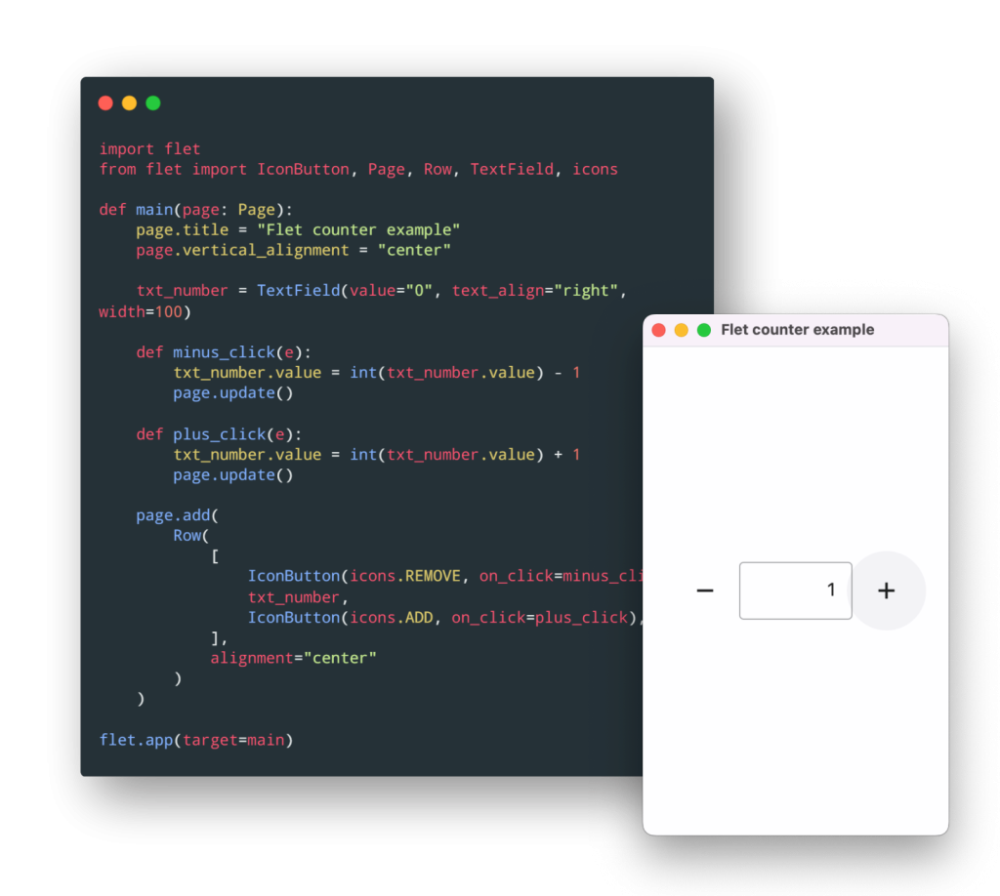
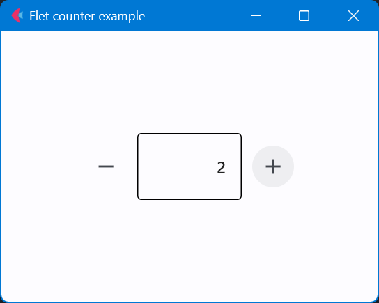

Flet，一款基于Python的跨平台前端框架
简介
官网：The fastest way to build Flutter apps in Python | Flet

The fastest way to build Flutter apps in Python | Flet
Flet 是一个框架，可以用它构建交互式多用户 Web、桌面和移动应用程序，而无需具有前端开发经验。可以使用基于 Google 的 Flutter 的 Flet 控件为程序构建一个 UI。Flet 不只是“包装”Flutter 小部件，而是通过组合较小的小部件、隐藏复杂性、实现 UI 最佳实践、应用合理的默认值来添加自己的“意见”——所有这些都是为了确保您的应用程序看起来很酷和专业，无需额外的努力。Introduction | Flet
根据网上提供的相关信息显示，这一框架是于2022年4月Python全新Flet框架或将打通iOS、Android、Macos和Windows多平台开发（Flet教程含3个完成项目源码)_知识大胖的博客-CSDN博客上线。我是在大约2022年11月份了解到该框架。由于之前有稍微了解过Flutter，因此，我对这一能够在Python上进行Flutter应用程序开发的解决方案抱有极大的兴趣。
目前来说，网上关于Flet的资料相对来说比较少（以b站为例，目前基本没有相关介绍）。
环境要求及安装
根据Pypi上显示，当前（2022年12月23日）的安装要求为
Python 3.7 or above on Windows, Linux or macOSflet · PyPI
安装方式与一般的包安装方式一致，一般可以选择使用pip安装。
1 | pip install flet |
第一个程序
运行文档里的counter.py程序。
1 | import flet as ft |

本博客所有文章除特别声明外，均采用 CC BY-NC-SA 4.0 许可协议。转载请注明来自 HUII's Blog！
相关推荐


评论